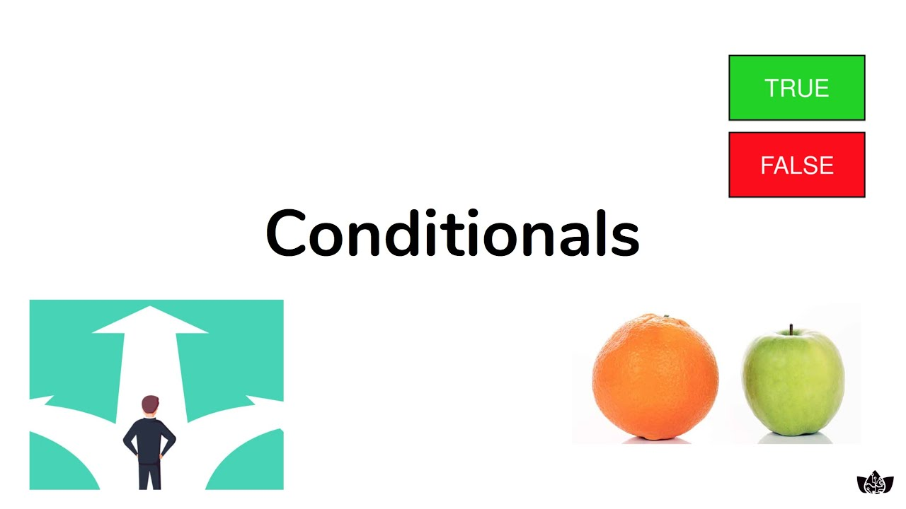

Data Programming • Developer Essentials
Dive into Python as we learn the basics and build off practicing data structures
to build complex programs!
Episodes
Details
-
 1. Introduction to Python (13m)
1. Introduction to Python (13m)
What is code? Learn about how we use Python for programming.
-

2. Conditionals (18m)
How do we structure Python logic? Using if statements!
-
 3. Lists & Indexing (24m)
3. Lists & Indexing (24m)
How do we store useful information in our code? Let's learn about lists, our first Python data structure.
-
 4. Sets & Slicing (30m)
4. Sets & Slicing (30m)
Sets are another data structure that enables us to bring flexibility in data analysis.
-
 5. For Loops (18m)
5. For Loops (18m)
Time to automate our code with the power of loops!
-
 6. While Loops (22m)
6. While Loops (22m)
While loops introduce similar logic to for loops, with a fun (and tricky) twist!